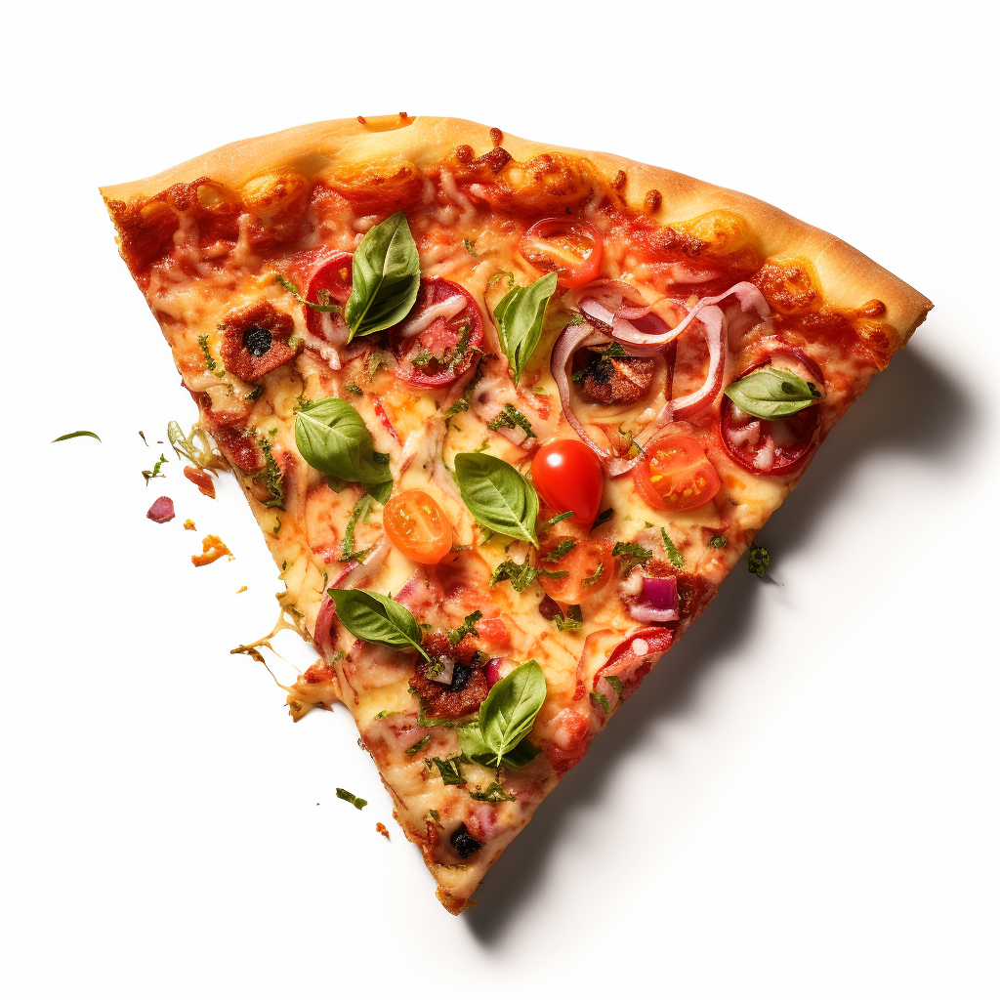

Vegetarian Pizza
Savor a speedy and delectable Vegetarian Pizza - a medley of vibrant veggies, gooey cheese, and zesty sauce create an effortlessly delightful dish. Enjoy the veggie goodness!
Ingredients
cheese

dough
paprika
salad
How to make an BLT Sandwitch
- 1 Roll out your pizza dough into your desired shape on a floured surface. Place it on a baking tray or pizza stone.
- 2 Evenly spread a layer of tomato sauce over the dough, leaving a border for the crust.
- 3 Generously sprinkle shredded cheese over the sauce. Choose your favorite cheese, like mozzarella, for that gooey goodness.
- 4 Sprinkle a pinch of paprika for a subtle kick of flavor and color enhancement.
- 5 Slice fresh mushrooms and distribute them over the cheese layer. These will add a hearty and savory element.
- 6 Preheat your oven to the recommended temperature (usually around 450°F or 230°C). Slide the pizza into the oven and bake until the crust is golden and the cheese is bubbly (typically 12-15 minutes).
- 7 While the pizza bakes, assemble a vibrant salad with your favorite greens, veggies, and a light dressing.
- 8 Keep an eye on the pizza to prevent over-browning. Once ready, carefully remove it from the oven.
- 9 Allow the pizza to cool for a minute before slicing. This helps set the cheese and prevents burning your mouth.
- 10 Slice the pizza, plate it alongside the refreshing salad, and relish your homemade Vegetarian Pizza creation!
Video Guide
This video was created by Taste of Trini on YouTube